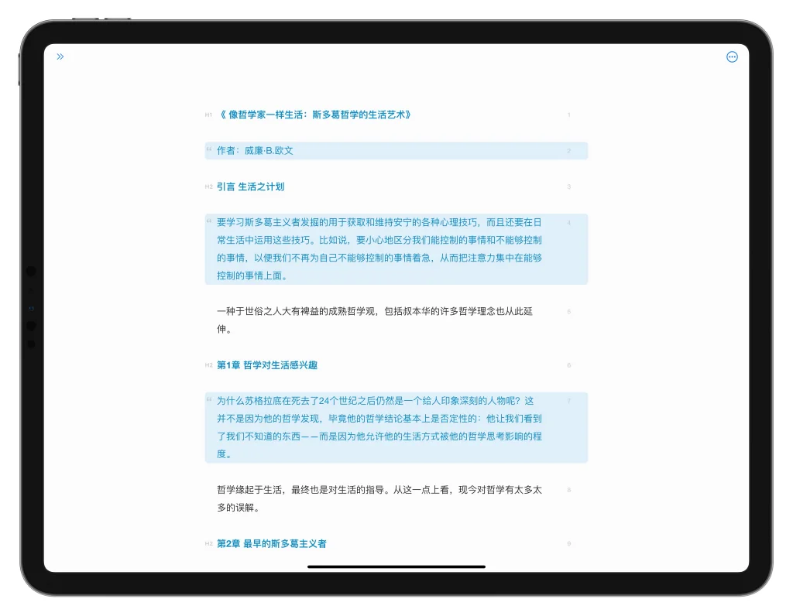

凌晨两点图书馆角落，我把改了五稿的论文救了回来
毕业论文答辩前一周，格式全崩、段落丢失、光标晃得眼晕，同考研的朋友扔来一个软件，半小时让我把五天的改动全找了回来。
凌晨两点整，图书馆三楼靠窗那个角落，我盯着屏幕上一片狼藉的 Word 文档，指尖悬在键盘上没动。
离答辩还有七天。这是我改到第五稿的「文献综述」章节——昨天从师姐发来的 PDF 里粘了三段文献综述，今天又把导师批注的红线一段段手动改进去，到刚才为止，整整四天的工作量。
现在它变成了这样：缩进层级乱成一锅粥，有的段落是八个空格，有的是一个 Tab，列表项更是跳来跳去；中间有一段我记得明明写了，但怎么翻都找不到；光标停在屏幕最底部，我已经低头看了三个小时，脖子酸得快转不动。
把文档关掉重开？试过了，没用。找回收站？Word 的回收站和废纸篓一样，只保留最近一份自动恢复，而我已经覆盖保存了不下二十次。问师姐？她的 Word 版本和我不一样，粘过去格式会更乱。
掏出手机准备订凌晨三点的咖啡，同自习室的室友探头过来，扫了一眼屏幕：「你还在用 Word 写长文啊？试试 Effieapp官网，我写毕设全用它。」
我以为又是那种「换个编辑器就能救世界」的鸡汤，敷衍地说「改天吧」。但她说的下一句话让我停下了——「我上周写了八千字的开题报告，电脑突然蓝屏，重开之后 Effie 自己就把所有内容给我还原了，连我删了的那段都找回来了。」
先解决最紧急的：格式
从官方下载拿了安装包，Effieapp 装完，导入 Word 文档。打开的那一刹那我愣住了——不是 Word 那种密密麻麻的界面，左侧只有一个窄窄的卡片栏，中间就是白纸黑字，没有工具栏，没有模板库，连「保存」按钮都找不到。光标在屏幕正中央。
后来才知道这叫打字机模式，是 Effieapp 默认开启的行为：无论我写到哪一行，光标始终悬浮在屏幕中间的位置。之前在 Word 里低头看了三个小时屏幕下半部分，现在抬头平视就能看到光标，脖子那股酸胀感居然十分钟就消了。
但格式问题还没解决。粘进来的内容缩进还是乱的。我想起室友说过 Effieapp 有个「排版」功能，按了一下 Ctrl+Alt+F。
一秒钟。
列表缩进全部对齐，段间距自动统一，空行规整得像用尺子量过一样。那三段从 PDF 粘进来的内容，之前带着 PDF 特有的缩进怪癖，现在也和正文无缝衔接了。

然后找回来丢失的那一段
格式问题搞定了，但我还是不甘心——中间那段关于「认知负荷理论」的综述我明明写过，怎么就不见了。在 Word 里翻了半小时没找到，现在 Effieapp 里翻了五分钟也没见影。
抱着试试的心态我打开了 Effieapp 的历史版本。菜单里直接找得到，也可以右键文稿卡片，里面有个「历史版本」选项。打开之后是一个时间轴——它自动记录了我过去两天里每一次重要的编辑版本，本地最多保留十个。
一个一个点开对比。到第七个版本的时候，那段文字好好地躺在那儿，和我四天前写的一模一样。Effieapp 让我在对比视图里确认无误后，点了一下「恢复」，那段文字就回到了当前文档的正确位置。恢复操作本身又生成了一个新版本，所以我想继续调整也随时可以再回退。
这是我第一次真切体会到「自动保存」到底意味着什么——不是那种每隔几分钟存一下的应急机制，而是把你整个写作过程的每一步都悄悄留了底，改坏了也不怕，删错了也不怕，反正总能找回来。
最后收尾：八千字里一秒定位参考文献
文档的问题都解决了，但我还有个头疼事：这篇综述里引用了四十七篇文献，每一篇我都在 Effieapp 里单独写了摘录和笔记，散在十几张文稿卡片里。现在要把它们按引用顺序排回去，手动翻卡片得翻到天亮。
Effieapp 的全局搜索快捷键是 Ctrl+Shift+F，各个平台的快捷键对照在 Effieapp文档 里列得很清楚。按下去之后卡片栏实时过滤，我输入「认知负荷」三个字，不到一秒，所有提到这个词的文稿卡片全部高亮显示。打开其中一张，搜索的关键词在正文里自动标记了黄色高亮——那就是我两天前写的那篇文献的摘录。

后来我才知道，Effieapp 的搜索之所以这么快，是因为它完全基于本地数据，不依赖云端同步。Notion 和印象笔记这种云端优先的工具，搜索速度取决于网络和同步状态，而 Effieapp 离线也能完整搜索，文稿越多这个优势越明显。
答辩通过之后
论文答辩顺利通过，导师说我的综述部分「逻辑清晰、格式规范」。 Effieapp 没帮我改内容，但帮我省下来的那六个小时，我把精力全花在了润色和答辩准备上。
从那之后 Effieapp 就没卸载。写项目文档、整理读书笔记、甚至写这篇博客的时候，我都是在 Effieapp 里先搭大纲——它左侧可以同时看大纲和思维导图，切换一下就行，不用开两个窗口。写完之后一键排版收个尾，导出 Markdown 直接丢到仓库里。
室友后来跟我说，她选 Effieapp 还有个原因——界面极简，不像其他写作工具那样堆满模板和功能入口，写长文的时候心不躁。打字机模式让脖子不累、历史版本让改坏了不怕、排版让格式一分钟收拾干净、搜索让几十篇文稿一秒定位。这些东西单拿出来都不复杂，但凑在一起，就是能让一个熬夜改论文的人少哭三次。
Effieapp 的完整资料我同步放了三份——GitHub 上是原始备份，Gitee 国内访问更稳，GitCode 是第三个备份，云同步抽风的时候也不怕断档。